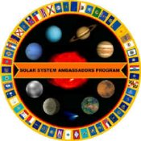

"It's Over Your Head" - astronomy radio program
Celestial North's weekly radio program. Each 5-minute episode airs at 8:20AM Wednesdays and 4:00PM Thursdays. Broadcast audio and transcripts are online, or listen live via the web.
To foster comprehension and enjoyment of the sciences by bringing the excitement and wonder of the universe into Puget Sound communities, schools and homes.
Celestial North's weekly radio program. Each 5-minute episode airs at 8:20AM Wednesdays and 4:00PM Thursdays. Broadcast audio and transcripts are online, or listen live via the web.
Celestial North is a certified Solar System Ambasador getting the insdie scoop and interviews straight from NASA and JPL!
Gain science writing/journalism experience through Celestial North's internship program for college and high school students and other aspiring science journalists.
"Unique, multimedia approach to sharing astronomy with local community separates Washington club from the rest."- Astronomy.com Read the entire announcement online.
Please consider a CHARITABLE DONATION to Celestial North, a 501(c)(3) non-profit corporation dedicated to bringing Quality Astronomy and General Science Education into Schools and Homes throughout the Pacific Northwest through our Radio Broadcasts, Public Presentations, School Programs, and Donations Website.